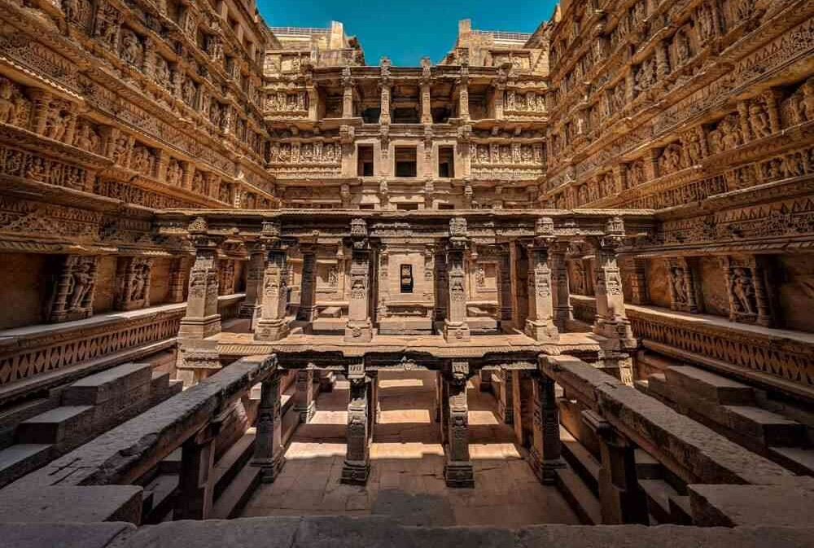

1 / 3

Rani ki Vav
2 / 3

Sun Tample
3 / 3
Jama Masjid
Ahmedabad, the largest city in the Gujarat state of India, boasts a rich history and vibrant culture. Founded in 1411 AD by Ahmed Shah, a noble who rebelled against Delhi overlords, the city has witnessed centuries of architectural marvels. It sits on the banks of the Sabarmati River, just 25 km from Gandhinagar, the state’s twin capital.
Known for its textile industry, Ahmedabad has emerged as an economic and industrial hub. Its bustling markets, intricate stepwells, and iconic landmarks like the Sabarmati Ashram (associated with Mahatma Gandhi) make it a captivating destination. With a population of 6.5 million, Ahmedabad thrives as a commercial center in prosperous Gujarat, one of the most developed state in the beautiful Indian subcontinent.
Adalaj Stepwell, also known as Rudabai’s Vav, is a captivating architectural marvel located in the village of Adalaj, near Gandhinagar city in Gujarat, India. Constructed in 1498, this five-story deep well stands as a testament to Indian craftsmanship and ingenuity.
üèõÔ∏è History and Legend: Built in memory of Rana Veer Singh of the Vaghela dynasty, Adalaj Stepwell served both practical and cultural purposes. In Gujarati and Marwari, it‚Äôs called a ‚Äúvav,‚Äù while in other Hindi-speaking regions, it‚Äôs known as a ‚Äúbaoli.‚Äù These stepwells were essential in semi-arid Gujarat, providing water for drinking, washing, and bathing. They also hosted vibrant festivals and sacred rituals.
üåø Architectural Beauty: Adalaj Stepwell‚Äôs intricate carvings, ornate pillars, and symmetrical design draw visitors from far and wide. The well‚Äôs cool, subterranean chambers offer respite from the scorching sun. Each level features stunning motifs, reflecting the fusion of Hindu and Islamic architectural styles.
üåÑ Tourist Attraction: Today, Adalaj Stepwell stands as a popular tourist attraction. Its historical significance, combined with its aesthetic appeal, makes it a must-visit. As you explore its depths, imagine the bustling life that once thrived around this oasis of water. Whether you‚Äôre an architecture enthusiast or simply seeking a serene escape, Adalaj Stepwell welcomes you with open arms.
The ISKCON Temple in Ahmedabad is a spiritual oasis that blends traditional architectural styles with devotion. Located on the Sarkhej-Gandhinagar Highway, this masterpiece spans four acres and stands 50 feet tall. Its exterior boasts intricate carvings and sculptures depicting scenes from Krishna’s life and his devotees1.
üèõÔ∏è History and Legend: The temple is part of the 5000-year-old Hare Krishna movement, introduced to the Western world by Srila Prabhupada. ISKCON has gifted the world 600 million spiritual books, distributed food to 2 million people daily, and transformed countless lives across 100+ countries2.
üåø The Uniqueness: Within the lush green campus, Govinda‚Äôs International Cuisine Restaurant serves over 350 delicacies prepared with love and devotion. The temple‚Äôs Sunday feast invites visitors to chant, dance, and partake in prasƒÅdam.
üïâÔ∏è The Culture: Founder Acharya Srila Prabhupada, born in Calcutta, India, dedicated his life to teaching Vedic knowledge globally. His legacy lives on through ISKCON‚Äôs spiritual endeavors and the serene ISKCON Temple in Ahmedabad2.
Pols in Ahmedabad are unique housing clusters that have shaped the city’s cultural fabric. These neighborhoods, often enclosed by large gates, consist of interconnected sheris (alleys) with compact layouts of individual homes. Here are some notable Pols in the old walled city of Ahmedabad:
These Pols, with their creaky doors, friendly faces, and rich history, continue to welcome visitors and preserve the essence of Ahmedabad’s heritage
Favorite Places: Seedi Saiyad ni Jaali, Riverfront, Patang Hotel, Akshardham Temple, Iskon Temple